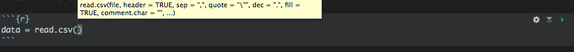
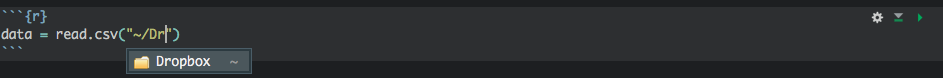
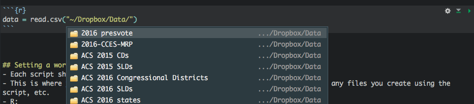
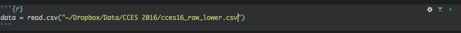
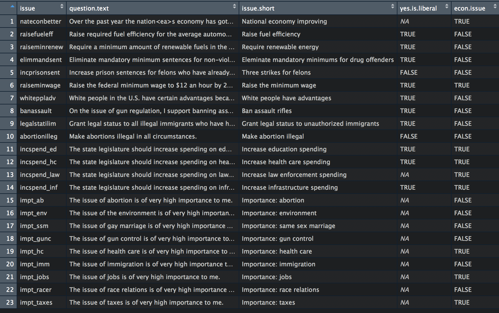

0_clean_data.R, 1_merge_census_data.R, 3_fit_multilevel models.R   
setwd("/Users/cskovron/Dropbox/Research/ncs-constituent-eval/analysis")
# on Mac is equivalent to
setwd("~/Dropbox/Research/ncs-constituent-eval/analysis")import os
path="~/Dropbox/Research/ncs-constituent-eval/analysis"
os.chdir(path)cd "~/Dropbox/Research/ncs-constituent-eval/analysis"dat <- read.csv("some-file-in-your-working-directory.csv", stringsAsFactors = FALSE)~ Your home directory (on my Mac, /Users/cskovron/). The current directory (./images/ is a subfolder of the working directory called images).. The parent of the current directory (the directory the working directory is in)write.csv(some.data.to.save, "./data-subfolder/data-filename.csv")View() (but be careful!)summary() (be careful on big datasets)head() and tail()tibble::glimpse()is.na() and sum(is.na())issues.names.titles.csv
paste() and paste0() to help write captions and labelsdata[, issue], if issue is a character vector, selects just that column. Loop over issues